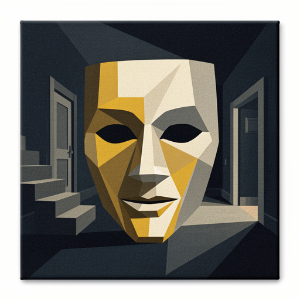
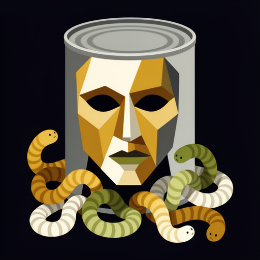

Cubist: the subject broken into overlapping planes seen from several angles at once. A restrained palette of ochre, umber, grey, and bone on a dark ground. Flat, poster-like, no text, no border. One subject centred and readable as a silhouette at thumbnail size. Suggest the setting a step removed — an object or figure it brings to mind, not a picture of the words themselves.

